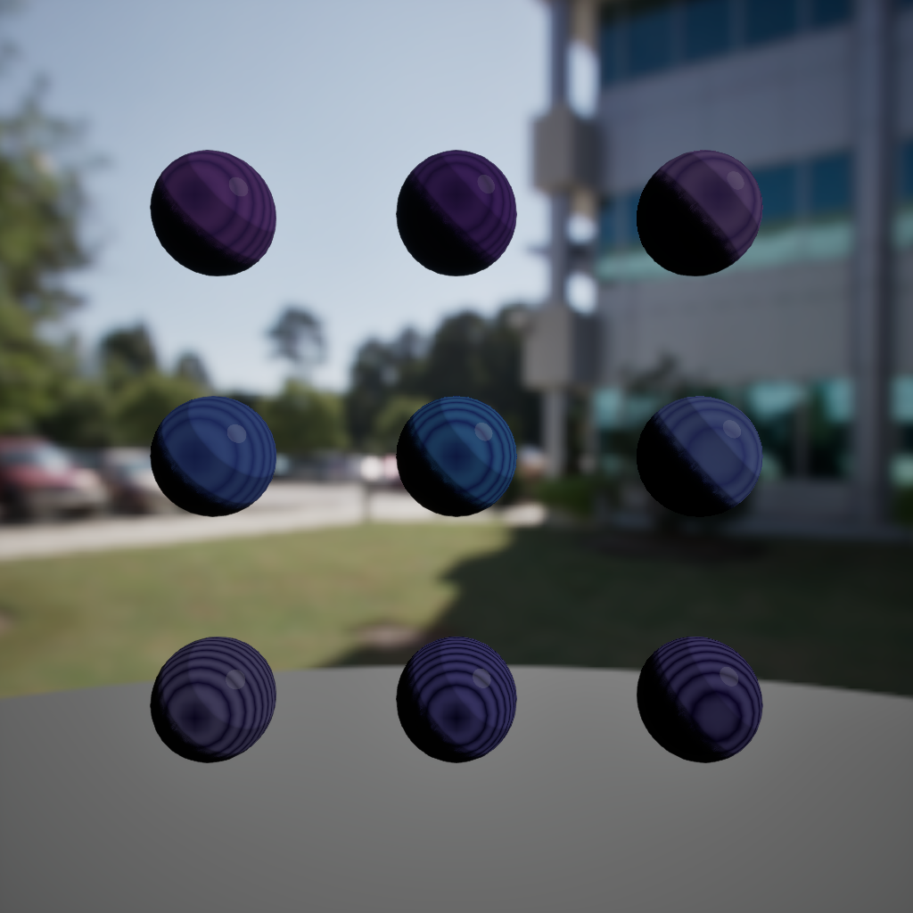
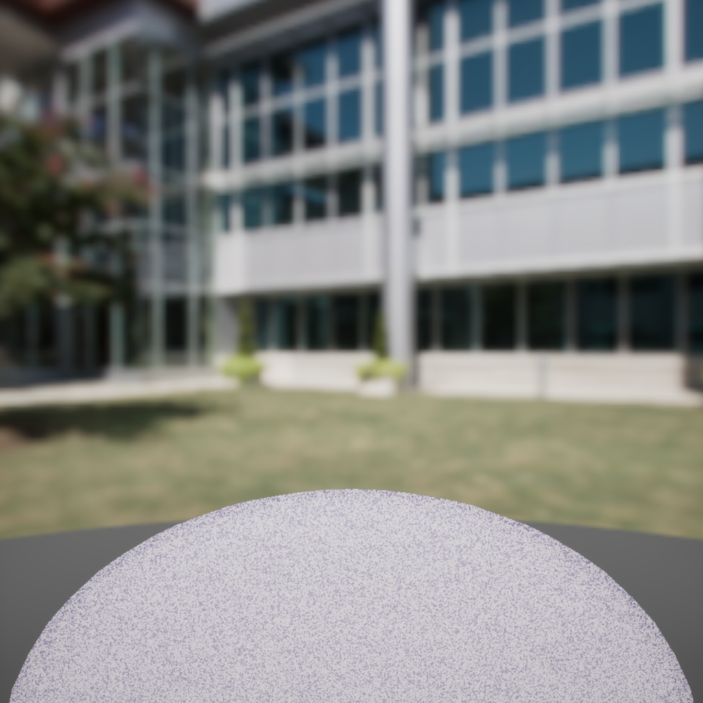

NightShift instance catalog
Every MI, one sphere at a time.
July 2026 NightShift captures — static sphere plates. For animated studio loops with PP and pillar backdrops, see the material loop gallery. Instances are reparented on M_Master_Toon_Universal; masters stay frozen.
Overview grids
Family grids before the per-instance read.
These composite plates are the fastest recruiter scan — then drill into individual instances below.

Cosmic family grid
Nine cosmic instances — nebula, starfield, aurora veil, void deep.

Nikki hero grid
Six magical-girl SDF heroes — Rosy Quartz through Starfield Dust.

CelestialNebula + NASA
Starmap-driven nebula sphere — Space Cathedral pillar proof.